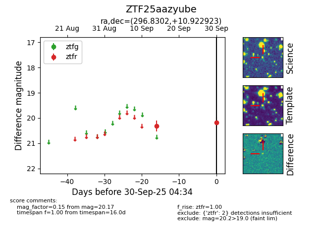

FINK: ZTF25aazyube
Lasair: ZTF25aazyube
ALeRCE: ZTF25aazyube
ZTF25aazyube (ztf,fink)
equatorial (ra, dec) = (296.8302,+10.92292)
galactic (l, b) = (49.1269,-7.15592)

last ztfr=20.17
2 ztfr detections